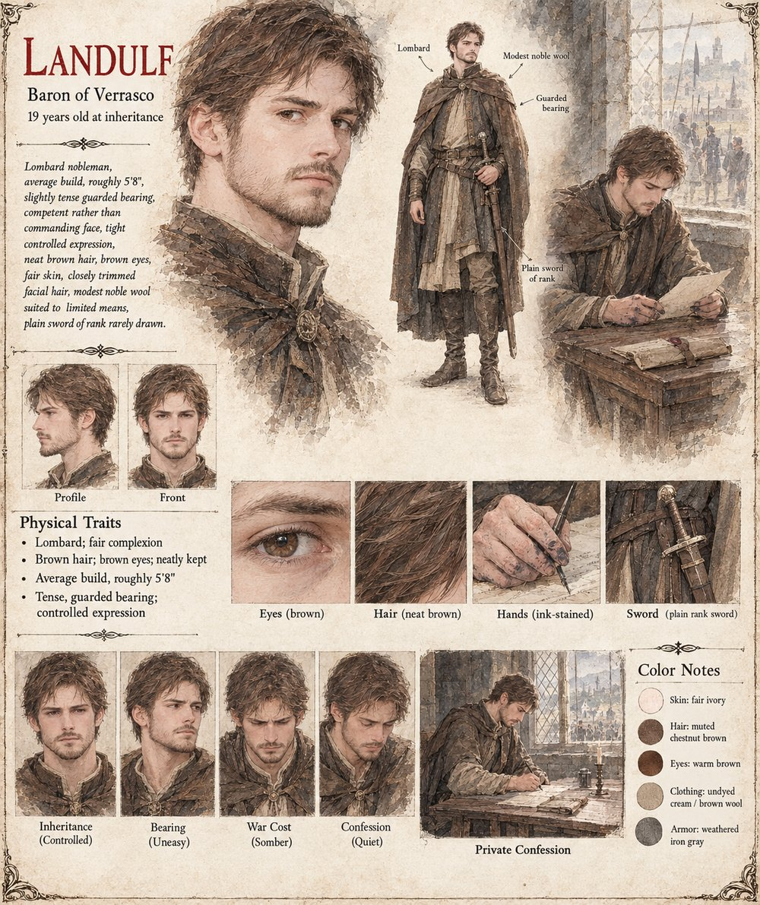

Landulf
Baron of Verrasco · 19 at his inheritance
Baron of Verrasco, who inherited the barony at nineteen when his older brother Ansfrid fell from a lathered horse during a boar hunt, and governs competently — a word, he comes to understand, people use about a man precisely when they mean to withhold something larger. He watches Vardane's fortunes climb for three years with a patience he'd call arithmetic rather than envy, and finally files a formal claim under the Writ of Undeclared Grace: not sorcery, not any crime the Threefold Crown has a name for, only an oversight any honest man might make. He wins. Holding the bearing alone afterward in a locked room, he feels not triumph but the particular cold of a man who has just proven his own accusation correct.
He tells no one what his own smith found, quietly exempts whole villages from the war's levy where he can justify it as necessity rather than mercy, and writes a confession to Garibald he never learns went unanswered by design rather than indifference. He dies without ever suspecting House Ratchis engineered the claimant that took the mill back from him.
“I am not accusing the Count of a crime, only of an oversight any honest man might make, and asking that the law correct it as the law was written to do.”